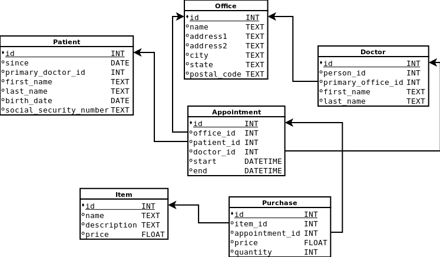

Foreign key relationships are a critical part of any database design and are automatically extracted and modeled in DKO-generated classes. Let's look at our example schema:

Now let's look at the code generated for the appointment table:
public class Appointment extends Table {
public static final Query<Appointment> ALL = [...];
public static final Field<Integer> ID = [...];
public static final Field<Integer> PATIENT_ID = [...];
public static final Field<Integer> DOCTOR_ID = [...];
public static final Field<Integer> OFFICE_ID = [...];
public static final Field<Date> START = [...];
public static final Field<Date> END = [...];
public static final Field.FK<Patient> FK_PATIENT = [...];
public static final Field.FK<Doctor> FK_DOCTOR = [...];
public static final Field.FK<Office> FK_OFFICE = [...];
public Integer getId() {}
public Integer getPatientId() {}
public Integer getDoctorId() {}
public Integer getOfficeId() {}
public Date getStart() {}
public Date getEnd() {}
public Patient getPatientIdFK() {}
public Doctor getDoctorIdFK() {}
public Office getOfficeIdFK() {}
}You should recognize the static Field objects, but you'll also notice the static Field.FK objects. These obviously represent the foreign key relationships extracted from the database.
You'll also note that for every foreign key defined, a "get*FK()" method is also created. If you call "getDoctorId()" you will receive the integer value in the column. But if you call "getDoctorIdFK()" you will receive a full-fledged Doctor object (itself containing all the values in a row of the doctor table).
If you're at the other end of the relationship you can still traverse the foreign key. For example, look at this subset of the generated office class:
public class Office extends Table {
public static final Query<Office> ALL = [...];
public static final Field<Integer> ID = [...];
public static final Field<String> ADDRESS1 = [...];
// etc
public Query<Doctor> getDoctorSet() {}
public Query<Appointment> getAppointmentSet() {}
}Two methods are added to let you retrieve the set of all doctors (or appointments) that reference this office instance. These methods return full-fledged query objects that can be filtered or joined with other tables as needed. (or simply turned into a list with "asList()")